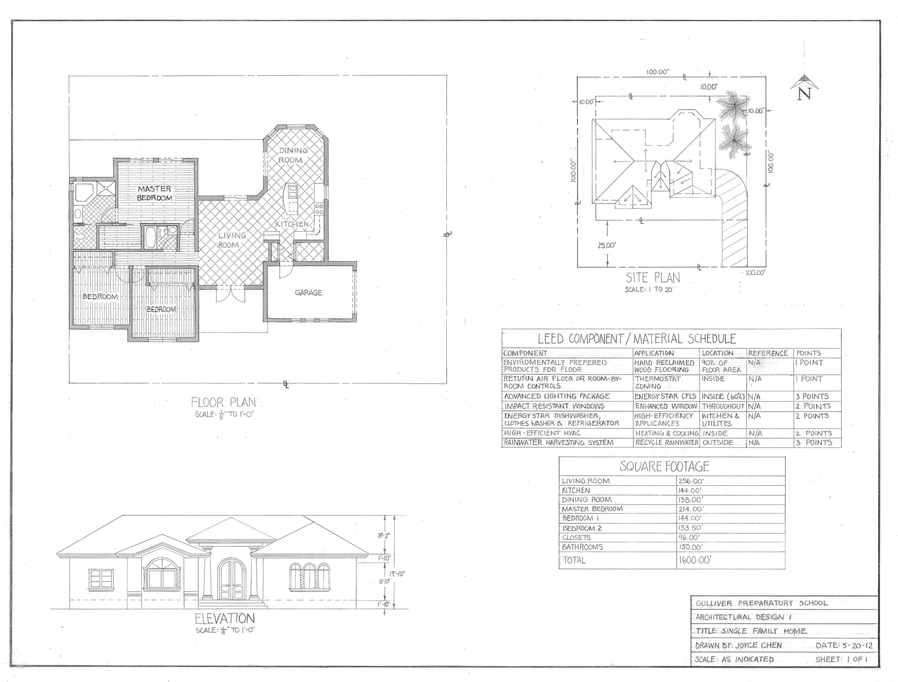
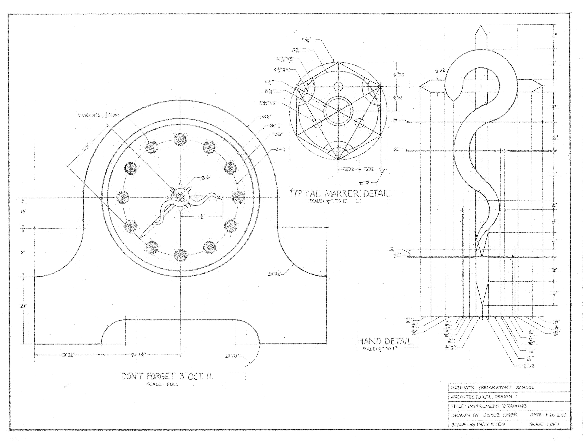
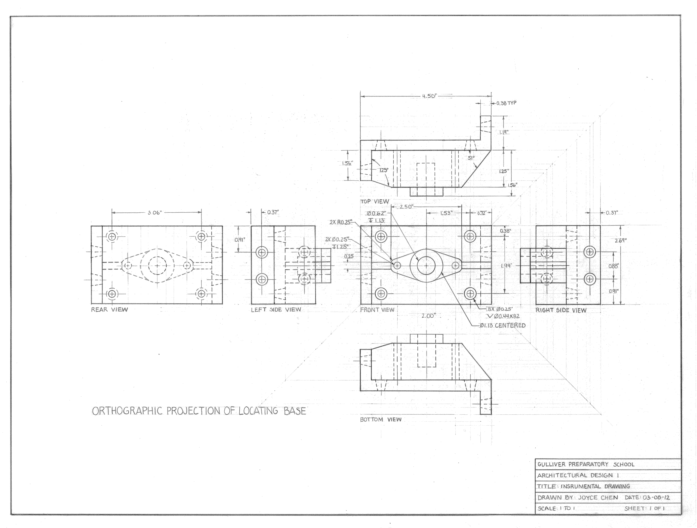

Vellum Technical Drawings
Mediterranean Revival Proposal
First Place at Florida State Fair
Proposal for a 1600 square foot Mediterranean Revival-styled one-story house. Includes floor plan, site plan, front elevation, square footage, and LEED component/material schedule.

Don't forget 3. Oct. 10
First Place at Miami-Dade County Fair
Clock design, including markers and hands. Markers are alchemy transmutation circles and hands are based on an illustration (by an alchemist, Nicolas Flamel) of a serpent crucified on a cross. Inspiration from Fullmetal Alchemist.

Locating Base
Orthographic projection of locating base. Practicing drawing projection from a 3D reference and labeling complex object dimensions.
